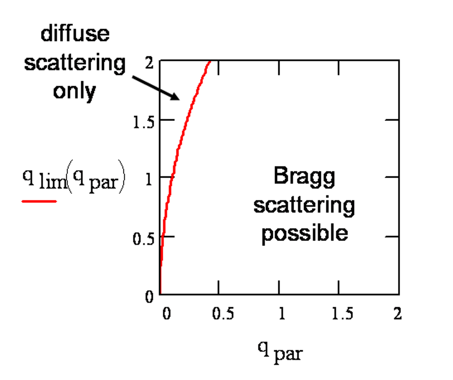

WAXS
/ GIWAXS @ D1: Conversions
Detlef
Smilgies, CHESS
Index
- WAXS
- Conversions
- WAXS in reflection geometry
- GIWAXS - Conventions
- Refraction correction
- Indexation
- Calibrations
- Questions & Comments
WAXS - Conversions
WAXS (Wide-Angle X-ray Scattering) is a close relative of powder
diffraction. Usually, the term WAXS is used in connection with diffuse
scatterers with only short range order, while powder diffraction is
used for polycrystalline samples. In terms of the use area detectors
both methods require identical data treatment. Another method requiring
similar data analysis is fiber diffraction.
In the WAXS regime with scattering angles larger than 5 deg the usual
small angles approximation alpha=sin(alpha)=tan(alpha) does not hold any more. Now
we need to perform the full transformation from a plane (the detector)
to a sphere (the Ewald sphere). As it turns out, this transformation is
not very difficult.
If direct beam hits the area detector at (xpixelD, zpixelD) and an arbitrary
point (xpixel, zpixel), then
the scattering angle tth is
given by
tan(tth)
= conversion sqrt{ (xpixel-xpixelD)2
+ (zpixel-zpixelD)2
} / LSD
The conversion from pixels to
microns is 46.9 microns per pixel for the MedOptics CCD, and LSD is the sample-detector
distance. From this we determine the length of the scattering vector q the usual way:
q
= 4 PI sin(tth/2) / lambda
where lambda denotes the
x-ray wavelength. For an isotropic sample we would be done now. In view
of the further treatment we have already introduced the CHESS default
hutch coordinate system with x towards the storage ring, y along the
beam and the vertical direction z.
For anisotropic samples we introduce
the azimuth angle azi round the direct beam with respect to the x axis.
Using the atan2 function which is used in transformations between 2D
Cartesian
and 2D polar coordinates, we get:
azi
= atan2(xpixel, zpixel)
(The atan2 unction is implemented in many programs and programming
languages for the conversion from 2D cartesian to polar coordinates.)
Now we can determine the components of the incident and final wave vectors
for elastic
scattering in the lab system by
kilabx
= kilabz = 0
kilaby = k = 2 PI / lambda
kflabx = k sin(tth) cos(azi)
kflabz = k sin(tth) sin(azi)
kflaby = k cos(tth)
The scattering vector q is then obtained as usual as
q
= kf,lab - ki,lab
The qy
coordinate is very small and thus is often ignored for diffuse
scatterers. Aternatively the parallel momentum transfer qpar can be introduced by
qpar
= sqrt(qx2
+ qy2)
This notation makes use of the CHESS hutch coordinate system; other
choices
of the coordinates are often used (e.g. qx,
qy in the detector plane).
Radial integrations of such patterns can be obtained by converting to
polar coordinates and integrating over azi. Such integration can also be
obtained using fit2d.
Textured samples, i.e. when the WAXS powder ring
are inhomogenous, can also be analyzed conveniently with fit2d in polar
coordinates (tth, azi) using the CAKE feature (see my fit2d primer).
WAXS in reflection
geometry
The conventions introduced above are also suitable for WAXS in the
reflection geometry, i.e. whenever the incident angle is large enough,
so that surface scattering features can be
ignored for the most part. Some dynamical effects remain when the exit
angle approaches the critical angle of the sample studied. For a
treatment of surface scattering under
grazing incidence see section below.
GIWAXS - Conversions
In GIWAXS we will comply with the notations established for GISAXS,
GID, and diffuse reflectivity. We introduce a surface coordinate system
by defining the following scattering angles: and q-components:
alpha
incident angle
psi
in-plane scattering angle
beta
exit angle
 Figure 1. Definition of surface
scattering angles and lab scattering angles (following psi-circle
convention)
Figure 1. Definition of surface
scattering angles and lab scattering angles (following psi-circle
convention)
reference: Smilgies & Blasini, J. Appl. Cryst. 40,
716-718 (2007).
For the surface coordinates we need to determine the incident angle alpha
which is given by the surface alignment. Usually the samth
turntable get calibrated during line-up by measuring a reflectivity
curve. If there are problems
with the line-up due to sample imperfections, alpha can also be determined very
precisely for each GISAXS image from the spill-over reflected beam
close to the beamstop:
alphaR
= tthR/2
tthR is the angle of the
reflected beam measured on the detector.
For alpha=0, there are
convenient formulae for psi and
beta (see Handbook of
International Crystallography under "Fiber Diffraction"):
tan(psi0)
= conversion (xpixel-xpixelD)/
LSD
tan(beta0)
= conversion (zpixel-zpixelD) /
sqrt{ (xpixel-xpixelD)2
+ LSD2}
psi0 and beta0 correspond to the longitude
and latitude of the exit wave vector, respectively, when the incident
beam points to the intersection of the Greenwich meridian and the
equator. In fiber diffraction the angles psi0 and beta0 sometimes are called mu and nu, respectively; on a psi-circle
diffractometer they are called nu and
delta, respectively. We will
call this frame the lab frame.
The scattering angle tth
is related to psi0
and beta0 via the
relation:
cos(tth)
= cos(psi0) cos(beta0)
For closer examination of the scattering features we need to introduce
the surface frame relative to the sample surface.
If alpha is non-zero,
but small, i.e. less than 1 deg as typically used in GIWAXS, a small
correction applies to beta:
beta
= beta0 - alpha cos(psi0)
psi = psi0
The scattering vector relative
to the surface frame (qz in
direction of the surface normal, qx along
the projection of the beam onto the surface) is then
given by (see for instance Smilgies, Rev. Sci. Instrum.
73, 1706 (2002) ):
qx
= k { cos(beta) cos(psi) - cos(alpha) }
qy = k { cos(beta) sin(psi) }
qz = k { sin(beta) + sin(alpha) }
So any point in the detector plane has a qy and qz component associated with it,
but also a small qx compont.
In surface diffraction from single crystals and 2D powders we would
want to plot the scattering intensity as the perpendicular scattering
vectot component q_perp
versus the parallel component q_par,
with
q_perp
= qz
q_par =
sqrt(qx2+qy2) = k sqrt{ cos(alpha)2 -
2 cos(alpha) cos(psi) cos (beta) + cos(beta)2}
Bragg scattering in GIWAXS is closely related to the various forms
Grazing-Incidence Diffraction, as discussed in the book by Als-Nielsen
and McMorrow.
Close to the incident plane given by psi=0,
i.e. the scattering signals right above the beam stop, the Bragg
condition cannot be fulfilled.
Hence any scattering features in this region should be treated as
diffuse. qx describes
the offset of the cut
of the Ewald sphere through the diffuse Bragg sheet from the actual
Bragg reflection (at qx=0).
Diffuse Bragg sheets are a means to characterize roughness correlations
in thin films and multilayers/lamellar films. The theoretical
description is in the framework of Distorted Wave Born Approximation
(see Sinha et al., Phys Rev B 38, 2297-2311, 1988 and Gutmann et al,
Physica B 283, 40-44, 2000).
This situation is similar to the meridional "reflections"
in fiber diffraction, and the "reflections" close to the oscillation
axis in protein crystallography, which are actually due to diffuse
scattering.
The limiting curve dividing the Bragg region from the diffuse
scattering region has the form
q_perp
< q_perp_lim = sqrt{ 2 k q_par
- q_par2 }
for small incident angles alpha.
Thus, in the Bragg region (for q_perp
<
q_perp_lim), q_perp should be plotted versus q_par. Otherwise q_perp versus qy may be a better choice for
diffuse Bragg sheets.

Figure 2. Limiting q_perp value
versus q_par for a typical range of q values (in Å-1) for the
CHESS D1 set-up.
For single
crystalline films the sample will have to be oscillated during exposure
of the detector (Smilgies et
al., J. Synchrotron Rad.
12, 807–811 (2005)), so that the Bragg condition can be met for all
points along the scattering rod covered by the detector. Finally the
surface
frame
is mandatory to describe dynamic effects that occur when either
incident
and exit angle are located between the critical angles of film and
substrate. See for instance Busch et al., J. Appl. Cryst. 39, 433-442
(2006).
If the scattering is dominated by the mosaicity of the thin film, or if
determination of the mosaic distribution is the primary goal,
the coordinate system that was introduced for texture studies (see in
the WAXS section above) may be
more suitable.
Refraction correction
For
scattering from thin films, refraction of the x-ray beam has to be
taken into account, in order to determine the d-spacing inside the
film. Refraction affects only the kz vector components, while the
parallel components of the wave vector are maintained across the interface {see Busch et al., J. Appl. Cryst. 39, 433-442
(2006) ) :
kpari' = kpari kparf' = kparf qpar' = (kparf' - kpari')
The perpendicular components can by obtained from Snell's law which reads in the x-ray case
|kzi'| = Re{ sqrt(kzi2 - kc2) } = k Re{ sqrt{ sin(alpha)2 - sin(alpha_cF)2 } }
kzf' = Re{ sqrt(kzf2 - kc2) } = k Re{ sqrt{ sin(beta)2 - sin(alpha_cF)2 } }
kc is the critical wavevector as given by the critical angle of the film alpha_cF
kc = k sin(alpha_cF)
The scattering vector inside the film is then given as usual
qz' = kzf' + |kzi'|
references
- Lee et al., Macromolecules 38, 3395 (2005); Macromolecules 38,
4311-4323 (2005).
- Busch et al., J. Appl. Cryst. 39, 433-442
(2006).
- Breiby et al., J. Appl. Cryst. 41, 262-271 (2008).
Indexation
The surface coordinate system introduced above is well-matched to describe surface
scattering features such as scattering rods which will extend along qz of the surface coordinate system
(see for instance: Smilgies et
al., J. Synchrotron Rad.
12, 807–811 (2005)). Moreover,
this frame is the correct one to determine the scattering vectors of
Bragg reflections for 2D powders and single-crystals. For determination
of lattice parameters and indexation of reflections see Smilgies &
Blasini, J. Appl. Cryst. 40, 716-718 (2007).
The refraction correction is essential for reflections with small exit angles {see Busch et al., J. Appl. Cryst. 39, 433-442
(2006) and Breiby et al., J. Appl. Cryst. 41, 262-271 (2008)}.
The diffraction corrected q-values (qpar',qz')
can then be used for indexing (see for instance Smilgies & Blasini,
J. Appl. Cryst. 40,
716-718 (2007)). While the technicalities are well understood,
indexation of surface scattering data from unknown lattices remains
still a bit a matter of trial & error to get the six lattice
parameters right. Fully automated indexation routines for surface
diffraction data have not yet been described nor made available to my
knowledge.
references
- Salzmann & Resel, J. Appl. Cryst. 37, 1029 (2004).
- Smilgies & Blasini, J. Appl. Cryst. 40,
716-718 (2007).
- Breiby et al., J. Appl. Cryst. 41, 262-271 (2008).
Calibrations
Often the sample-detector distance LSD
and/or the x-ray wavelength lambda
are only good to a couple of percent. In this case it is advisable to
doublecheck the calibration using a silver behenate or silver stearate
standard. The powder rings obtained from these samples allow to improve
LSD or lambda. An absolute angle
measurement and distance measurement can be performed using 2
exposures, where the CCD is moved back by a well-known amount. The
x-ray wavelength can be determined precisely using the CHESS energy
analyzer ( using the Si(111) and Si(333) reflections ).
The other important calibration is the direct beam position which
should be measured regularly, and in particular, whenever the detector
is moved. The GIWAXS macro set at D1 includes a convenient automatic macro
for this measurement.
Questions & Comments
If you have questions or comments, I would be glad to hear back from you -
just click here.
If this page was useful for your work I would appreciate very much, if you referenced it.